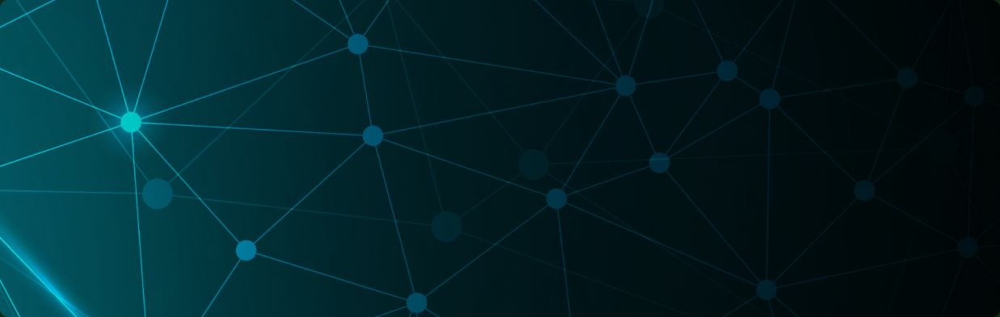

Global Watch Datasets
Screen global risk. Monitor continuously.
Optimum for Professional Services Global Watch Datasets provide screening across global sanctions, watchlists, PEPs, and RCAs for individuals, corporates, vessels, and aircraft. The solution is designed to add an extra layer of KYC and AML control by helping organisations identify potential exposure during onboarding, customer reviews, transactions, and ongoing monitoring. It combines global risk data and intelligence with configurable screening rules and organisation-specific lists.
Global data for a broader risk view
The provider materials describe coverage across 220+ countries, more than 3,000 datapoints, and data updates every 15 minutes. The solution also provides data intelligence with automated expansion, helping teams maintain a more current view of changing risk information.
Key capabilities
Optimum for Professional Services Global Watch Datasets bring together sanctions, watchlist, PEP, and RCA screening in one configurable platform, giving organisations continuous visibility into risk exposure across individuals, corporates, vessels, and aircraft.
Sanctions and watchlist screening
Screen entities against relevant global sanctions and watchlist data as part of onboarding, periodic reviews, transaction-related checks, and event-driven due diligence.
PEP and RCA screening
Support screening for politically exposed persons and their relatives and close associates as part of a broader, risk-based KYC and AML control framework.
Local and parametric lists
Add organisation-specific blacklists and whitelists to the system and configure which lists should be used for each screening process. This allows teams to combine global datasets with local risk intelligence and internal controls.
Automated ongoing monitoring
Continue monitoring after the initial check. Automated ongoing monitoring helps surface relevant changes in sanctions, watchlists, PEP, RCA, and related risk data so that organisations can reassess exposure when new information becomes available.
Grouped entity-based alerts
Organise potential matches and monitoring events around the relevant entity. Grouped entity-based alerts can help reduce duplication, focus human review, and create a clearer record of screening activity.
Configurable, risk-based screening
Apply screening rules that reflect your organisation’s risk appetite, customer profile, jurisdictional exposure, sector, relationship type, and internal review requirements.
Screen the entities that matter

Individuals
Screen customers, applicants, employees, beneficial owners, directors, partners, and other individuals against relevant sanctions, watchlists, PEP, RCA, and related risk datasets.
Corporates
Screen companies, legal entities, and their beneficial owners against relevant sanctions, watchlist, and risk datasets to assess corporate exposure.
Vessels
Check vessel-related data against relevant sanctions and watchlist datasets to identify potential exposure in shipping and maritime transactions.
Aircraft
Screen aircraft-related data against relevant sanctions and watchlist datasets to support due diligence in aviation-related transactions.